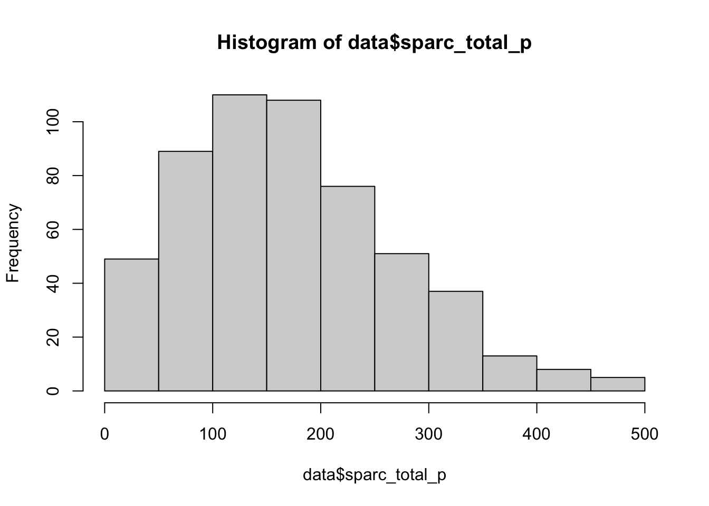

Análisis de datos de sarcopenia y necesidades de cuidados paliativos (SPARC)
Análisis exploratorio de datos
Objetivo. Estimar la asociación entre sarcopenia medida mediante el instrumento SARCF y las necesidades holísticas no satisfechas de cuidados paliativos determinadas mediante SPARC, en pacientes con enfermedades crónicas no transmisibles oncológicas y no oncológicas del Hospital universitario San José entre el 2021 y 2022. Este objetivo es de naturaleza exploratoria y no causal.
Objetivos Específicos
Describir las características sociodemográficas de los pacientes con enfermedades no transmisibles crónicas oncológicas y no oncológicas.
Describir la prevalencia de sarcopenia, definida por un puntaje en la escala SARC-F >4 puntos en pacientes con enfermedades crónicas no transmisibles.
Determinar la prevalencia de necesidades holísticas no satisfechas existentes en la población de pacientes con enfermedades crónicas no transmisibles y estratificar la estimación por cada uno de los 8 dominios de la herramienta SPARC-Sp.
Diseñar una estrategia de visualización apropiada para el reporte de las necesidades holísticas no satisfechas valoradas mediante la herramienta SPARC-Sp.
Pregunta de Investigación (PECO): ¿En los pacientes con enfermedades no transmisibles, existe asociación entre la presencia de sarcopenia medida a través del instrumento SARC-F y las necesidades no satisfechas o no resueltas, determinadas con el instrumento SPARC?
Preparacion de los datos - Librerias
library(readxl) library(dplyr)
Attaching package: 'dplyr'
The following objects are masked from 'package:stats':
filter, lag
The following objects are masked from 'package:base':
intersect, setdiff, setequal, union
The following objects are masked from 'package:gtsummary':
all_categorical, all_continuous, all_contrasts, all_dichotomous,
all_interaction, all_intercepts
library(forcats)
Importando datos y summary inicial
data <-read_excel("~/Rdocs/sarcopenia/SPARC_data_labels.xlsx")
sparc_fis sparc_psic sparc_rel sparc_inde
Min. : 0.00 Min. : 0.000 Min. :0.000 Min. :0.000
1st Qu.:10.00 1st Qu.: 2.250 1st Qu.:0.000 1st Qu.:1.000
Median :16.00 Median : 5.000 Median :1.000 Median :4.000
Mean :16.93 Mean : 5.945 Mean :1.128 Mean :3.918
3rd Qu.:22.00 3rd Qu.: 8.000 3rd Qu.:2.000 3rd Qu.:6.000
Max. :50.00 Max. :26.000 Max. :6.000 Max. :9.000
sparc_fami sparc_tra
Min. : 0.000 Min. :0.000
1st Qu.: 1.000 1st Qu.:0.000
Median : 3.000 Median :2.000
Mean : 3.353 Mean :2.093
3rd Qu.: 5.000 3rd Qu.:4.000
Max. :12.000 Max. :6.000
Objetivo 2. Describir la prevalencia de sarcopenia, definida por un puntaje en la escala SARC-F >4 puntos en pacientes con enfermedades crónicas no transmisibles.
##Visualizacion inicial Sarcopenia
data <- data %>%mutate(sarc_tot_cat =if_else( sarc_tot >4,1L, # Sarcopenia0L # No sarcopenia ) )ggplot(data, aes(x = sarc_tot)) +geom_histogram(aes(y = ..density..), binwidth =1, fill ="lightblue", color ="black") +geom_density(color ="red", size =1) +labs(title ="Histograma de sarc_tot con línea de densidad",x ="sarc_tot",y ="Densidad") +theme_minimal()
Warning: The dot-dot notation (`..density..`) was deprecated in ggplot2 3.4.0.
ℹ Please use `after_stat(density)` instead.
ggplot(data, aes(x = sarc_tot, fill =as.factor(dx_oms_ca))) +geom_density(alpha =0.5) +labs(title ="Distribución de sarc_tot por dx_oms_ca",x ="sarc_tot",y ="Densidad",fill ="dx_oms_ca") +theme_minimal()
Objetivo 3. Determinar la prevalencia de necesidades holísticas no satisfechas existentes en la población de pacientes con enfermedades crónicas no transmisibles y estratificar la estimación por cada uno de los 8 dominios de la herramienta SPARC-Sp.
par(mfrow =c(2, 3)) # Configura la disposición de los gráficoshist(data$sparc_fis_p, main ="Histograma Sparc Físico", xlab ="Sparc Físico (%)", col ="lightblue")hist(data$sparc_psic_p, main ="Histograma Sparc Psicológico", xlab ="Sparc Psicológico (%)", col ="lightgreen")hist(data$sparc_rel_p, main ="Histograma Sparc Relacional", xlab ="Sparc Relacional (%)", col ="lightpink")hist(data$sparc_inde_p, main ="Histograma Sparc Independencia",xlab ="Sparc Independencia (%)", col ="lightyellow") hist(data$sparc_fami_p, main ="Histograma Sparc Familiar",xlab ="Sparc Familiar (%)", col ="lightgray")hist(data$sparc_tra_p, main ="Histograma Sparc Tratamiento",xlab ="Sparc Tratamiento (%)", col ="lightcoral")
shapiro.test(data$sparc_fis_p)
Shapiro-Wilk normality test
data: data$sparc_fis_p
W = 0.9726, p-value = 1.415e-08
shapiro.test(data$sparc_psic_p)
Shapiro-Wilk normality test
data: data$sparc_psic_p
W = 0.90219, p-value < 2.2e-16
shapiro.test(data$sparc_rel_p)
Shapiro-Wilk normality test
data: data$sparc_rel_p
W = 0.82989, p-value < 2.2e-16
shapiro.test(data$sparc_inde_p)
Shapiro-Wilk normality test
data: data$sparc_inde_p
W = 0.92723, p-value = 1.299e-15
shapiro.test(data$sparc_fami_p)
Shapiro-Wilk normality test
data: data$sparc_fami_p
W = 0.91519, p-value < 2.2e-16
shapiro.test(data$sparc_tra_p)
Shapiro-Wilk normality test
data: data$sparc_tra_p
W = 0.88908, p-value < 2.2e-16
data <- data %>%mutate(sparc_total_p = sparc_fis_p + sparc_psic_p + sparc_rel_p + sparc_inde_p + sparc_fami_p + sparc_tra_p)hist(data$sparc_total_p)

shapiro.test(data$sparc_total_p)
Shapiro-Wilk normality test
data: data$sparc_total_p
W = 0.97065, p-value = 5.413e-09
summary(data$sparc_total_p)
Min. 1st Qu. Median Mean 3rd Qu. Max.
0.00 99.22 162.85 174.04 235.03 499.40
ggplot(data, aes(sample = sparc_total_p)) +stat_qq() +stat_qq_line(color ="red") +labs(title ="Q–Q plot de normalidad del puntaje total SPARC",x ="Cuantiles teóricos",y ="Cuantiles observados" ) +theme_minimal()
ggplot(data, aes(x =as.factor(sarc_tot_cat), y = sparc_total_st, fill =as.factor(sarc_tot_cat))) +geom_boxplot() +labs(title ="Boxplot de Puntaje Total SPARC por Sarcopenia",x ="Sarcopenia (0=No, 1=Sí)",y ="Puntaje Total SPARC (%)") +theme_minimal() +scale_fill_manual(values =c("lightblue", "lightcoral"), name ="Sarcopenia", labels =c("No", "Sí"))
ggplot(data, aes(x = sarc_tot, y = sparc_total_st)) +geom_point(alpha =0.6, color ="blue") +geom_smooth(method ="lm", color ="red", se =FALSE) +labs(title ="Diagrama de dispersión de Puntaje Total SPARC vs Sarcopenia",x ="sarc_tot",y ="Puntaje Total SPARC (%)") +theme_minimal()
Estimación de diferencias ajustadas en las necesidades holísticas no satisfechas, incorporando como covariables edad, sexo, diagnóstico, estado funcional y comorbilidades entre pacientes con y sin sarcopenia.
model2 <-lm(sparc_total_st ~ sarc_tot_cat + dx_oms_ca + edad + genero + karno + charlson, data = data)summary(model2)
Call:
lm(formula = sparc_total_st ~ sarc_tot_cat + dx_oms_ca + edad +
genero + karno + charlson, data = data)
Residuals:
Min 1Q Median 3Q Max
-47.496 -12.168 -1.801 10.770 57.440
Coefficients:
Estimate Std. Error t value Pr(>|t|)
(Intercept) 54.46503 6.47814 8.408 3.76e-16 ***
sarc_tot_catCon Sarcopenia 9.62774 1.99916 4.816 1.91e-06 ***
dx_oms_caCancer 2.50229 2.21847 1.128 0.25985
edad -0.23864 0.05406 -4.414 1.22e-05 ***
generoFemenino 3.01565 1.56544 1.926 0.05458 .
karno -0.17144 0.05443 -3.150 0.00173 **
charlson 2.01684 0.75073 2.687 0.00744 **
---
Signif. codes: 0 '***' 0.001 '**' 0.01 '*' 0.05 '.' 0.1 ' ' 1
Residual standard error: 17.74 on 539 degrees of freedom
Multiple R-squared: 0.1799, Adjusted R-squared: 0.1708
F-statistic: 19.71 on 6 and 539 DF, p-value: < 2.2e-16
Modelos independientes para cada dominio (6). Modelos crudos.
model_fis_crudo <-lm(sparc_fis_p ~ sarc_tot_cat, data = data)summary(model_fis_crudo)
Call:
lm(formula = sparc_fis_p ~ sarc_tot_cat, data = data)
Residuals:
Min 1Q Median 3Q Max
-29.667 -10.090 -1.167 8.910 46.533
Coefficients:
Estimate Std. Error t value Pr(>|t|)
(Intercept) 22.790 0.750 30.388 <2e-16 ***
sarc_tot_catCon Sarcopenia 10.077 1.179 8.548 <2e-16 ***
---
Signif. codes: 0 '***' 0.001 '**' 0.01 '*' 0.05 '.' 0.1 ' ' 1
Residual standard error: 13.52 on 544 degrees of freedom
Multiple R-squared: 0.1184, Adjusted R-squared: 0.1168
F-statistic: 73.07 on 1 and 544 DF, p-value: < 2.2e-16
model_psic_crudo <-lm(sparc_psic_p ~ sarc_tot_cat, data = data)summary(model_psic_crudo)
Call:
lm(formula = sparc_psic_p ~ sarc_tot_cat, data = data)
Residuals:
Min 1Q Median 3Q Max
-26.97 -12.17 -3.83 7.27 69.33
Coefficients:
Estimate Std. Error t value Pr(>|t|)
(Intercept) 18.630 0.948 19.651 < 2e-16 ***
sarc_tot_catCon Sarcopenia 8.338 1.490 5.596 3.48e-08 ***
---
Signif. codes: 0 '***' 0.001 '**' 0.01 '*' 0.05 '.' 0.1 ' ' 1
Residual standard error: 17.09 on 544 degrees of freedom
Multiple R-squared: 0.05443, Adjusted R-squared: 0.05269
F-statistic: 31.31 on 1 and 544 DF, p-value: 3.485e-08
model_rel_crudo <-lm(sparc_rel_p ~ sarc_tot_cat, data = data)summary(model_rel_crudo)
Call:
lm(formula = sparc_rel_p ~ sarc_tot_cat, data = data)
Residuals:
Min 1Q Median 3Q Max
-21.195 -17.182 -4.495 16.118 82.818
Coefficients:
Estimate Std. Error t value Pr(>|t|)
(Intercept) 17.182 1.132 15.183 <2e-16 ***
sarc_tot_catCon Sarcopenia 4.013 1.779 2.256 0.0245 *
---
Signif. codes: 0 '***' 0.001 '**' 0.01 '*' 0.05 '.' 0.1 ' ' 1
Residual standard error: 20.4 on 544 degrees of freedom
Multiple R-squared: 0.009271, Adjusted R-squared: 0.007449
F-statistic: 5.09 on 1 and 544 DF, p-value: 0.02445
model_inde_crudo <-lm(sparc_inde_p ~ sarc_tot_cat, data = data)summary(model_inde_crudo)
Call:
lm(formula = sparc_inde_p ~ sarc_tot_cat, data = data)
Residuals:
Min 1Q Median 3Q Max
-54.001 -25.307 -3.107 19.193 63.593
Coefficients:
Estimate Std. Error t value Pr(>|t|)
(Intercept) 36.407 1.678 21.691 < 2e-16 ***
sarc_tot_catCon Sarcopenia 17.594 2.638 6.669 6.34e-11 ***
---
Signif. codes: 0 '***' 0.001 '**' 0.01 '*' 0.05 '.' 0.1 ' ' 1
Residual standard error: 30.26 on 544 degrees of freedom
Multiple R-squared: 0.07558, Adjusted R-squared: 0.07388
F-statistic: 44.48 on 1 and 544 DF, p-value: 6.34e-11
model_fami_crudo <-lm(sparc_fami_p ~ sarc_tot_cat, data = data)summary(model_fami_crudo)
Call:
lm(formula = sparc_fami_p ~ sarc_tot_cat, data = data)
Residuals:
Min 1Q Median 3Q Max
-32.206 -16.748 -0.048 9.494 74.952
Coefficients:
Estimate Std. Error t value Pr(>|t|)
(Intercept) 25.048 1.178 21.263 < 2e-16 ***
sarc_tot_catCon Sarcopenia 7.158 1.852 3.866 0.000124 ***
---
Signif. codes: 0 '***' 0.001 '**' 0.01 '*' 0.05 '.' 0.1 ' ' 1
Residual standard error: 21.24 on 544 degrees of freedom
Multiple R-squared: 0.02674, Adjusted R-squared: 0.02495
F-statistic: 14.95 on 1 and 544 DF, p-value: 0.000124
model_tra_crudo <-lm(sparc_tra_p ~ sarc_tot_cat, data = data)summary(model_tra_crudo)
Call:
lm(formula = sparc_tra_p ~ sarc_tot_cat, data = data)
Residuals:
Min 1Q Median 3Q Max
-42.986 -29.384 3.916 23.714 70.616
Coefficients:
Estimate Std. Error t value Pr(>|t|)
(Intercept) 29.384 1.646 17.849 < 2e-16 ***
sarc_tot_catCon Sarcopenia 13.603 2.588 5.257 2.11e-07 ***
---
Signif. codes: 0 '***' 0.001 '**' 0.01 '*' 0.05 '.' 0.1 ' ' 1
Residual standard error: 29.68 on 544 degrees of freedom
Multiple R-squared: 0.04834, Adjusted R-squared: 0.04659
F-statistic: 27.64 on 1 and 544 DF, p-value: 2.108e-07
tbl_regression(model_fis_crudo)
Characteristic
Beta
95% CI
p-value
sarc_tot_cat
Sin Sarcopenia
—
—
Con Sarcopenia
10
7.8, 12
<0.001
Abbreviation: CI = Confidence Interval
tbl_regression(model_psic_crudo)
Characteristic
Beta
95% CI
p-value
sarc_tot_cat
Sin Sarcopenia
—
—
Con Sarcopenia
8.3
5.4, 11
<0.001
Abbreviation: CI = Confidence Interval
tbl_regression(model_rel_crudo)
Characteristic
Beta
95% CI
p-value
sarc_tot_cat
Sin Sarcopenia
—
—
Con Sarcopenia
4.0
0.52, 7.5
0.024
Abbreviation: CI = Confidence Interval
tbl_regression(model_inde_crudo)
Characteristic
Beta
95% CI
p-value
sarc_tot_cat
Sin Sarcopenia
—
—
Con Sarcopenia
18
12, 23
<0.001
Abbreviation: CI = Confidence Interval
tbl_regression(model_fami_crudo)
Characteristic
Beta
95% CI
p-value
sarc_tot_cat
Sin Sarcopenia
—
—
Con Sarcopenia
7.2
3.5, 11
<0.001
Abbreviation: CI = Confidence Interval
tbl_regression(model_tra_crudo)
Characteristic
Beta
95% CI
p-value
sarc_tot_cat
Sin Sarcopenia
—
—
Con Sarcopenia
14
8.5, 19
<0.001
Abbreviation: CI = Confidence Interval
Modelos independientes para cada dominio (6). Modelos ajustados.
model_fis <-lm(sparc_fis_p ~ sarc_tot_cat + dx_oms_ca + edad + genero + karno + charlson, data = data)summary(model_fis)
Call:
lm(formula = sparc_fis_p ~ sarc_tot_cat + dx_oms_ca + edad +
genero + karno + charlson, data = data)
Residuals:
Min 1Q Median 3Q Max
-35.989 -8.872 -0.463 8.148 40.578
Coefficients:
Estimate Std. Error t value Pr(>|t|)
(Intercept) 45.62245 4.51517 10.104 < 2e-16 ***
sarc_tot_catCon Sarcopenia 6.01071 1.39338 4.314 1.91e-05 ***
dx_oms_caCancer 4.51487 1.54624 2.920 0.003648 **
edad -0.14685 0.03768 -3.897 0.000109 ***
generoFemenino 1.14798 1.09109 1.052 0.293205
karno -0.20826 0.03794 -5.489 6.22e-08 ***
charlson 1.88619 0.52325 3.605 0.000341 ***
---
Signif. codes: 0 '***' 0.001 '**' 0.01 '*' 0.05 '.' 0.1 ' ' 1
Residual standard error: 12.36 on 539 degrees of freedom
Multiple R-squared: 0.2694, Adjusted R-squared: 0.2613
F-statistic: 33.13 on 6 and 539 DF, p-value: < 2.2e-16
model_psic <-lm(sparc_psic_p ~ sarc_tot_cat + dx_oms_ca + edad + genero + karno + charlson, data = data)summary(model_psic)
Call:
lm(formula = sparc_psic_p ~ sarc_tot_cat + dx_oms_ca + edad +
genero + karno + charlson, data = data)
Residuals:
Min 1Q Median 3Q Max
-34.158 -10.679 -3.664 7.670 70.521
Coefficients:
Estimate Std. Error t value Pr(>|t|)
(Intercept) 43.49486 5.90522 7.365 6.66e-13 ***
sarc_tot_catCon Sarcopenia 5.15923 1.82236 2.831 0.004812 **
dx_oms_caCancer 0.77536 2.02227 0.383 0.701569
edad -0.21815 0.04928 -4.427 1.16e-05 ***
generoFemenino 2.97985 1.42700 2.088 0.037249 *
karno -0.19318 0.04962 -3.893 0.000111 ***
charlson 2.47988 0.68433 3.624 0.000318 ***
---
Signif. codes: 0 '***' 0.001 '**' 0.01 '*' 0.05 '.' 0.1 ' ' 1
Residual standard error: 16.17 on 539 degrees of freedom
Multiple R-squared: 0.1612, Adjusted R-squared: 0.1519
F-statistic: 17.27 on 6 and 539 DF, p-value: < 2.2e-16
model_rel <-lm(sparc_rel_p ~ sarc_tot_cat + dx_oms_ca + edad + genero + karno + charlson, data = data)summary(model_rel)
Call:
lm(formula = sparc_rel_p ~ sarc_tot_cat + dx_oms_ca + edad +
genero + karno + charlson, data = data)
Residuals:
Min 1Q Median 3Q Max
-33.665 -16.896 -3.063 13.868 81.885
Coefficients:
Estimate Std. Error t value Pr(>|t|)
(Intercept) 18.97581 7.37750 2.572 0.0104 *
sarc_tot_catCon Sarcopenia 5.17431 2.27670 2.273 0.0234 *
dx_oms_caCancer 4.26642 2.52646 1.689 0.0919 .
edad -0.10636 0.06157 -1.728 0.0846 .
generoFemenino 0.22434 1.78277 0.126 0.8999
karno 0.02543 0.06199 0.410 0.6818
charlson 1.46998 0.85495 1.719 0.0861 .
---
Signif. codes: 0 '***' 0.001 '**' 0.01 '*' 0.05 '.' 0.1 ' ' 1
Residual standard error: 20.2 on 539 degrees of freedom
Multiple R-squared: 0.03741, Adjusted R-squared: 0.02669
F-statistic: 3.491 on 6 and 539 DF, p-value: 0.002141
model_inde <-lm(sparc_inde_p ~ sarc_tot_cat + dx_oms_ca + edad + genero + karno + charlson, data = data)summary(model_inde)
Call:
lm(formula = sparc_inde_p ~ sarc_tot_cat + dx_oms_ca + edad +
genero + karno + charlson, data = data)
Residuals:
Min 1Q Median 3Q Max
-74.473 -25.195 1.415 20.938 71.805
Coefficients:
Estimate Std. Error t value Pr(>|t|)
(Intercept) 61.17312 10.84289 5.642 2.72e-08 ***
sarc_tot_catCon Sarcopenia 15.22382 3.34612 4.550 6.64e-06 ***
dx_oms_caCancer -2.03926 3.71320 -0.549 0.58310
edad -0.27210 0.09049 -3.007 0.00276 **
generoFemenino 6.63580 2.62018 2.533 0.01161 *
karno -0.17569 0.09111 -1.928 0.05433 .
charlson 2.73153 1.25654 2.174 0.03015 *
---
Signif. codes: 0 '***' 0.001 '**' 0.01 '*' 0.05 '.' 0.1 ' ' 1
Residual standard error: 29.69 on 539 degrees of freedom
Multiple R-squared: 0.118, Adjusted R-squared: 0.1082
F-statistic: 12.02 on 6 and 539 DF, p-value: 1.089e-12
model_fami <-lm(sparc_fami_p ~ sarc_tot_cat + dx_oms_ca + edad + genero + karno + charlson, data = data)summary(model_fami)
Call:
lm(formula = sparc_fami_p ~ sarc_tot_cat + dx_oms_ca + edad +
genero + karno + charlson, data = data)
Residuals:
Min 1Q Median 3Q Max
-37.917 -15.651 -2.926 10.174 78.053
Coefficients:
Estimate Std. Error t value Pr(>|t|)
(Intercept) 43.11235 7.71698 5.587 3.68e-08 ***
sarc_tot_catCon Sarcopenia 4.78605 2.38147 2.010 0.0450 *
dx_oms_caCancer -1.72434 2.64272 -0.652 0.5144
edad -0.12535 0.06440 -1.946 0.0521 .
generoFemenino 0.61548 1.86481 0.330 0.7415
karno -0.13751 0.06484 -2.121 0.0344 *
charlson 1.01255 0.89429 1.132 0.2580
---
Signif. codes: 0 '***' 0.001 '**' 0.01 '*' 0.05 '.' 0.1 ' ' 1
Residual standard error: 21.13 on 539 degrees of freedom
Multiple R-squared: 0.04512, Adjusted R-squared: 0.03449
F-statistic: 4.245 on 6 and 539 DF, p-value: 0.000345
model_tra <-lm(sparc_tra_p ~ sarc_tot_cat + dx_oms_ca + edad + genero + karno + charlson, data = data)summary(model_tra)
Call:
lm(formula = sparc_tra_p ~ sarc_tot_cat + dx_oms_ca + edad +
genero + karno + charlson, data = data)
Residuals:
Min 1Q Median 3Q Max
-60.174 -24.580 -2.213 21.044 78.057
Coefficients:
Estimate Std. Error t value Pr(>|t|)
(Intercept) 59.61977 10.62525 5.611 3.22e-08 ***
sarc_tot_catCon Sarcopenia 11.72680 3.27896 3.576 0.000380 ***
dx_oms_caCancer 6.70338 3.63867 1.842 0.065986 .
edad -0.32296 0.08867 -3.642 0.000296 ***
generoFemenino 3.45670 2.56759 1.346 0.178778
karno -0.16698 0.08928 -1.870 0.061972 .
charlson 0.49198 1.23132 0.400 0.689640
---
Signif. codes: 0 '***' 0.001 '**' 0.01 '*' 0.05 '.' 0.1 ' ' 1
Residual standard error: 29.1 on 539 degrees of freedom
Multiple R-squared: 0.09366, Adjusted R-squared: 0.08357
F-statistic: 9.283 on 6 and 539 DF, p-value: 1.069e-09
tbl_regression(model_fis)
Characteristic
Beta
95% CI
p-value
sarc_tot_cat
Sin Sarcopenia
—
—
Con Sarcopenia
6.0
3.3, 8.7
<0.001
dx_oms_ca
No oncologica
—
—
Cancer
4.5
1.5, 7.6
0.004
edad
-0.15
-0.22, -0.07
<0.001
genero
Masculino
—
—
Femenino
1.1
-1.0, 3.3
0.3
karno
-0.21
-0.28, -0.13
<0.001
charlson
1.9
0.86, 2.9
<0.001
Abbreviation: CI = Confidence Interval
tbl_regression(model_psic)
Characteristic
Beta
95% CI
p-value
sarc_tot_cat
Sin Sarcopenia
—
—
Con Sarcopenia
5.2
1.6, 8.7
0.005
dx_oms_ca
No oncologica
—
—
Cancer
0.78
-3.2, 4.7
0.7
edad
-0.22
-0.31, -0.12
<0.001
genero
Masculino
—
—
Femenino
3.0
0.18, 5.8
0.037
karno
-0.19
-0.29, -0.10
<0.001
charlson
2.5
1.1, 3.8
<0.001
Abbreviation: CI = Confidence Interval
tbl_regression(model_rel)
Characteristic
Beta
95% CI
p-value
sarc_tot_cat
Sin Sarcopenia
—
—
Con Sarcopenia
5.2
0.70, 9.6
0.023
dx_oms_ca
No oncologica
—
—
Cancer
4.3
-0.70, 9.2
0.092
edad
-0.11
-0.23, 0.01
0.085
genero
Masculino
—
—
Femenino
0.22
-3.3, 3.7
0.9
karno
0.03
-0.10, 0.15
0.7
charlson
1.5
-0.21, 3.1
0.086
Abbreviation: CI = Confidence Interval
tbl_regression(model_inde)
Characteristic
Beta
95% CI
p-value
sarc_tot_cat
Sin Sarcopenia
—
—
Con Sarcopenia
15
8.7, 22
<0.001
dx_oms_ca
No oncologica
—
—
Cancer
-2.0
-9.3, 5.3
0.6
edad
-0.27
-0.45, -0.09
0.003
genero
Masculino
—
—
Femenino
6.6
1.5, 12
0.012
karno
-0.18
-0.35, 0.00
0.054
charlson
2.7
0.26, 5.2
0.030
Abbreviation: CI = Confidence Interval
tbl_regression(model_fami)
Characteristic
Beta
95% CI
p-value
sarc_tot_cat
Sin Sarcopenia
—
—
Con Sarcopenia
4.8
0.11, 9.5
0.045
dx_oms_ca
No oncologica
—
—
Cancer
-1.7
-6.9, 3.5
0.5
edad
-0.13
-0.25, 0.00
0.052
genero
Masculino
—
—
Femenino
0.62
-3.0, 4.3
0.7
karno
-0.14
-0.26, -0.01
0.034
charlson
1.0
-0.74, 2.8
0.3
Abbreviation: CI = Confidence Interval
tbl_regression(model_tra)
Characteristic
Beta
95% CI
p-value
sarc_tot_cat
Sin Sarcopenia
—
—
Con Sarcopenia
12
5.3, 18
<0.001
dx_oms_ca
No oncologica
—
—
Cancer
6.7
-0.44, 14
0.066
edad
-0.32
-0.50, -0.15
<0.001
genero
Masculino
—
—
Femenino
3.5
-1.6, 8.5
0.2
karno
-0.17
-0.34, 0.01
0.062
charlson
0.49
-1.9, 2.9
0.7
Abbreviation: CI = Confidence Interval
Objetivo 4. Diseñar una estrategia de visualización apropiada para el reporte de las necesidades holísticas no satisfechas valoradas mediante la herramienta SPARC-Sp.